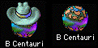
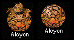
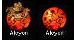
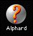
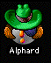
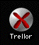

Gezegenleri Keşfetmek: Sıcaklık ve Yerçekimi
Bir noktada ana gezegenini bırakıp başka yaşanabilir gezegenler aramak için yakındaki yıldızları keşfetmeye biraz emek harcamak isteyeceksin. Her gezegenin iki önemli özelliği vardır: Sıcaklık ve Yerçekimi.
Sıcaklık, bir yıldız sisteminde değiştirebileceğin her şeyi temsil eder: atmosferin bileşiminden gezegenin ekolojisine kadar. Ana gezegenin 72°’dir. Yeni bir gezegeni Terraform etmeye para harcadığında sıcaklığı 72°’ye yaklaşır. Sıcaklık 72°’ye ulaştığında gezegen olabileceği kadar iyidir ve Terraforma daha fazla harcayamazsın.
Yerçekimi, bir yıldız sisteminde değiştiremeyeceğin her şeyi temsil eder: güneşin ışımasından uyduların gelgit kuvvetlerine kadar. Bazı yerler düpedüz ötekiler kadar yaşanabilir değildir. Ana gezegenin 1,00 G’dir ve bir gezegen buna ne kadar yakınsa halkı o kadar iyi durumda olur. 2,5 G’den çok büyük ya da 0,4 G’den küçük gezegenler hiçbir zaman kâr etmez ve uzun vadede kolonileştirmeye değmez. Tabii ki metâl bu kadar kıt bir mal olduğuna göre, bütün metâlini alacak kadar bir süre yaşanmaz bir gezegeni kolonileştirmekten kaçınmamalısın.
 Gezegenler Nasıl Kolonileştirilir
Gezegenler Nasıl Kolonileştirilir
Bir noktada elinde tutmak isteyeceğin leziz bir gezegen bulacaksın. 1,46 G ve 198° gibi bir şey olacak. 9.487 Metâli olacak ve ona karşı koyamayacaksın.
İlk adım bir tür Koloni Gemisi yapıp oraya göndermektir. (Başlangıç konumun “Gelişen” ya da “Bereketli” ise bir koloni gemisi senin için zaten yapılmış olur.) Gemi vardığında yeni bir gezegeni kolonileştirdiğini bildiren bir mesaj alırsın. “Sen Güneş’i kolonileştirdin.” gibi bir şey der.
Bu noktada Bütçe Penceresi’nde yeni yıldızın adıyla yeni bir yuvanın belirdiğini fark edeceksin. Bu gezegen için Terraform ve Madenciliğe parayı burada ayırırsın.
Bir gezegenin kârlı hâle gelmesi, harika bir gezegen olsa bile, biraz zaman alır. Onlarca yıl boyunca gezegeni terraform ederek ve kazarak para akıtacaksın. Halkın küçücük bir avuçtan Galaktik İmparatorluğuna katkıda bulunan canlı, kârlı bir ekonomiye büyümesini izleyeceksin. Bir gezegen başlangıçta ne kadar kötüyse onu kâra geçirmen o kadar uzun sürer.
Bir gezegeni Terraform etmeye ne kadar çok para harcarsan o kadar hızlı büyür. Ne yazık ki sıcaklık kusursuz bir 72° olduğunda bile, bütün gezegeni geçindirecek kadar insanın büyük olasılıkla hâlâ olmaz. Sabırlı ol, nüfus büyüyecek. Madencilik ve gemi yapımının nüfusun ne kadar hızlı büyüdüğüne hiçbir etkisi yoktur.
Bir gezegeni geçindirmenin temel maliyeti $7.500’dür. Ana gezegenin sırada yalnızca yaklaşık $30.000 ürettiğine göre, aynı anda yalnızca dört gezegeni kolonileştirmeye yetecek paran olur. En fazla. Büyük olasılıkla, en azından o kâra geçene kadar, yalnızca birini kolonileştirmek isteyeceksin. Yoksa bütün paranı yalnızca insanlarını hayatta tutmaya harcarsın ve gezegenleri geliştirmek, gemi yapmak ve yeni teknoloji araştırmak için elinde çok az şey kalır.
Pek çok kolonileştirilmiş gezegenin olması iyidir. Ne kadar çok kârlı gezegenin olursa o kadar çok para kazanırsın. Ne kadar çok para kazanırsan araştırmaya o kadar çok harcayabilirsin. Teknolojin ne kadar yüksekse bir düşmanın seni ezip geçme olasılığı o kadar düşüktür; tabii o yüksek teknolojiyle gemiler yaptıysan. Ayrıca pek çok gezegenin varsa bir ikisinin düşman gemilerince çiğnenmesini göze alabilirsin.
Bütün kolonilerinin iyi adamlara benzediğini fark edeceksin. Yani maske, koyu güneş gözlüğü, mohikan saç ya da küpe takmıyorlar. Basit: beyaz şapka sana düşer. Tabii ki öteki oyuncuların hepsi de iyi adamların kendileri olduğunu düşünüyor.
Bir gezegeni sömürmek
Bazen kendini metâl sıkıntısı içinde bulacaksın. İşte, ne kadar terraform edersen et ve ne kadar beklersen bekle hiçbir zaman kâr etmeyeceğini adın gibi bildiğin bir gezegeni kolonileştirmenin tam zamanı. Belki 3,5 G’dir, hatta daha kötü. Gezegeni kolonileştir, ama harcamasını Terraforma hiç para gitmeyecek biçimde ayarla. Hepsini Madenciliğe harca. Gezegenden istediğin kadar metâl aldığında onu “ Tahliye et ”. Orada yaptığın Uydular kalır, ama kolonicilerin gider.
Bazen bir gezegeni, sırf bir düşman metâlini almasın diye kazmak isteyebilirsin.
Düşman Gezegenler Nasıl Yok Edilir
Bir düşman kolonisine bir filo gönder. Filon düşman gemilerini ve uydularını yok ettiğinde gezegenin kendisini dövmeye geçer ve halkını sürüler hâlinde öldürür. Gezegenin kendisi sert bir direniş gösterebilir, ama bu büyük olasılıkla yalnızca keşif kuvvetlerine karşı korunmaya yeter. İstila filona karşı gezegenin halkının tamamen silinmesi kuvvetle olasıdır. Düşman artık gezegenin sahibi olmaz. Onu kolonileştirmekte ya da başka ne istersen yapmakta özgür olursun. Tabii ki düşman canı sıkılıp onu geri almaya çalışabilir, bu yüzden dikkatli olmak iyi bir fikirdir.
Farklı Gezegen Resimleri
Farklı türden gezegenlerin her birinin kendine özgü bir görünüşü vardır. Bu bölüm gezegen resimlerinin bir sözlüğüdür.
Kolonileştirilmiş, Kârlı Bir Gezegen

Bu, halkının kendini geçindirebilecek noktaya kadar büyüdüğü bir gezegendir. Yıldızlar arası çabana para bile sağlayabilir. Ana gezegenin böyledir.
Kâr Etme Olasılığı Olan Bir Gezegen

Bu kategorideki bir gezegen, yeterince zaman ve emekle bir gün kârlı olabilir. Onu kârlı yapmak için 72°’ye yaklaşana kadar terraform etmen ve halkına büyümesi için zaman tanıman gerekir.
Yarı Yaşanabilir Bir Gezegen

0,4 ile 0,5 G ya da 2,0 ile 2,5 G arasındaki bir gezegen bu kategoriye girer. Sonunda bu tür bir gezegen kârlı hâle getirilebilir. Yine de hiçbir zaman çok kârlı olmayacaktır, bu yüzden çoğu zaman en iyisi bu tür bir gezegeni kazıp bırakmaktır.
Yaşanmaz Bir Gezegen
Yerçekimi 2,5 G’den büyük ya da 0,4 G’den küçük bir gezegeni kârlı hâle getirmek neredeyse olanaksızdır. Yine de ender durumlarda stratejik nedenlerle böyle bir gezegeni elde tutmak iyi bir fikir olabilir. Geri kalan zamanlarda bütün Metâlini kaz ve onu “ Tahliye et ”; terraform etmeye uğraşma.
Talan Edilmiş, Yaşanmaz Bir Gezegen

Bu tür bir gezegen yalnızca hiçbir zaman kâr etmemekle kalmaz, kazabileceğin hiç metâli de yoktur. Iyy! Stratejik bir önemi yoksa ya da orada bir düşman üssü olmasından korkmuyorsan bu hurdayı rahat bırak.
Keşfedilmemiş Bir Gezegen

Bu, hiç gitmediğin bir gezegendir.
Yakında Keşfedilecek Bir Gezegen
Keşfedilmemiş bir gezegene bir filo gönderirsen soru işareti ünlem işaretine dönüşür ve yakında daha çok şey öğreneceğini bildirir.
Bir Düşman Gezegeni

Bir savaş kaybettiğin her gezegen düşman gezegeni olur. Bir gezegen, oraya başka bir filo gönderip bir savaş kazanana kadar düşman olarak kalır. Aslında bir düşman gezegenine filo gönderip orada kimseyi ya da başka bir düşmanı bulabilirsin. Gezegenler hakkındaki bütün bilgilerin en son orada bulunduğun zamana dayanır. Belli bir gezegende bulunmanın üzerinden uzun zaman geçtiyse o gezegen hakkındaki bilgilerin eskimiş olabilir.
Düşman gezegenleri türlü türlü kötü adamlara benzer. Her düşman oyuncunun kendi görünüşü olur, böylece nerede kiminle savaştığını anlarsın.
Bir Müttefik Gezegeni
Başka bir oyuncuyla müttefik olduğunda, Yıldız Haritası’ndaki simgesi bunu gösterecek biçimde değişir. Simgesi daha açık bir renge döner ve artık iyi adam olduğu için başının üstünde bir “hale” belirir.
Bir Savaş Gezegeni

Arada bir hiç gitmediğin bir yıldıza bir filo gönderir ve orada gücü seninkine yakın bir düşman filosu bulursun. Sen de düşman da ölürseniz bu gezegen resmini görürsün. Gezegeni henüz keşfetmediğini, ama kötü adamların yakında olduğunu bildiğini söyler. Henüz keşfetmediğin bir gezegende iki başka oyuncunun savaştığı büyük bir savaşı fark edersen de bu gezegeni görürsün.
Uydular
Herhangi bir gezegene uydu yerleştirirsen, o gezegenin yıldız haritasında savunulduğunu bildiren bir halkası olur.
Filolar
Herhangi bir gezegende filon varsa, filoyu ve filodaki gemilerin tipini gösteren küçük simgeler gezegenin sağ üst köşesinden başlayıp aşağı doğru belirir. Biliyoruz, noktalar ay gibi görünebilir, ama bu seni aldatmasın. Bir filoyu seçmek için filo “noktalarına” tıkla. Bir filoyu başka bir gezegene göndermek için tıklayıp sürükle.
Müttefik Filolar
Gezegenlerinden birinde konaklamış dost filolar görürsen, orada onların da bir filo simgesi olur. Ve hayır, müttefiklerinin filolarına tıklayıp sürükleyerek nereye gideceklerini söyleyemezsin.